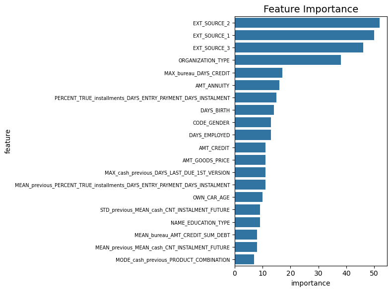

调优自动特征工程#
在自动特征工程中,我们的df字段类型都是由woodwork自动推断的，几乎是完全自动化的过程。
我们需要对字段类型引入更多的人为设置
时间序列
自定义原语
类型纠正
导入#
import pandas as pd
import numpy as np
import seaborn as sns
import matplotlib.pyplot as plt
import featuretools as ft
import woodwork as ww
from woodwork.column_schema import ColumnSchema
from woodwork.logical_types import NaturalLanguage, Datetime,Boolean
from featuretools.primitives import AggregationPrimitive, TransformPrimitive
from featuretools.tests.testing_utils import make_ecommerce_entityset
import warnings
warnings.filterwarnings('ignore')
import gc
gc.enable()
print(f'ft: {ft.__version__}, ww: {ww.__version__}')
c:\Users\63517\miniconda3\envs\data-analysis\lib\site-packages\woodwork\__init__.py:2: UserWarning: pkg_resources is deprecated as an API. See https://setuptools.pypa.io/en/latest/pkg_resources.html. The pkg_resources package is slated for removal as early as 2025-11-30. Refrain from using this package or pin to Setuptools<81.
import pkg_resources
ft: 1.31.0, ww: 0.31.0
application_train = pd.read_csv('data/application_train.csv')
application_test = pd.read_csv('data/application_test.csv')
bureau = pd.read_csv('data/bureau.csv')
bureau_balance = pd.read_csv('data/bureau_balance.csv')
credit_card_balance = pd.read_csv('data/credit_card_balance.csv')
installments_payments = pd.read_csv('data/installments_payments.csv')
previous_application = pd.read_csv('data/previous_application.csv')
pos_cash_balance = pd.read_csv('data/POS_CASH_balance.csv')
为了验证我们的处理过程，必须先抽样一些。
# application_train = application_train.iloc[:1000, :]
# application_test = application_test.iloc[:1000, :]
# bureau = bureau.iloc[:1000, :]
# bureau_balance = bureau_balance.iloc[:1000, :]
# credit_card_balance = credit_card_balance.iloc[:1000, :]
# installments_payments = installments_payments.iloc[:1000, :]
# previous_application = previous_application.iloc[:1000, :]
# pos_cash_balance = pos_cash_balance.iloc[:1000, :]
application_train['set'] = 'train'
application_test['set'] = 'test'
application_test['TARGET'] = np.nan
print(application_train.shape, application_test.shape)
app = pd.concat([application_train, application_test], ignore_index=True)
app_target = app[['SK_ID_CURR', 'TARGET']]
app_set = app[['SK_ID_CURR', 'set']]
app = app.drop(columns=['set'])
(307511, 123) (48744, 123)
application_train.dtypes.unique()
array([dtype('int64'), dtype('O'), dtype('float64')], dtype=object)
ww.logical_types
<module 'woodwork.logical_types' from 'c:\\Users\\63517\\miniconda3\\envs\\data-analysis\\lib\\site-packages\\woodwork\\logical_types.py'>
woodwork认识：#
物理类型
逻辑类型：
语义标签：额外数据含义
逻辑类型是必须的， 语义标签是可选的
woodwork使用了Pandas 的 Accessor机制，这是扩展接口，在import featuretools时候，就把ww加上去了
woodwork初始时候会为其添加逻辑类型，语义标签
语义标签#
ww.list_semantic_tags()
| name | is_standard_tag | valid_logical_types | |
|---|---|---|---|
| 0 | numeric | True | [Age, AgeFractional, AgeNullable, Double, Inte... |
| 1 | category | True | [Categorical, CountryCode, CurrencyCode, Ordin... |
| 2 | index | False | Any LogicalType |
| 3 | time_index | False | [Datetime, Age, AgeFractional, AgeNullable, Do... |
| 4 | date_of_birth | False | [Datetime] |
| 5 | ignore | False | Any LogicalType |
| 6 | passthrough | False | Any LogicalType |
numeric,category标准语义标签和特定的逻辑类型关联index,time_indexwoodwork为一些索引列添加标签，表明一些含义date_of_birth表明应该解释为出生日期ignore,passthrough应该被忽略，在ft过程中
我们应该添加额外标签帮助解释
逻辑类型#
ww.list_logical_types()
| name | type_string | description | physical_type | standard_tags | is_default_type | is_registered | parent_type | |
|---|---|---|---|---|---|---|---|---|
| 0 | Address | address | Represents Logical Types that contain address ... | string | {} | True | True | None |
| 1 | Age | age | Represents Logical Types that contain whole nu... | int64 | {numeric} | True | True | Integer |
| 2 | AgeFractional | age_fractional | Represents Logical Types that contain non-nega... | float64 | {numeric} | True | True | Double |
| 3 | AgeNullable | age_nullable | Represents Logical Types that contain whole nu... | Int64 | {numeric} | True | True | IntegerNullable |
| 4 | Boolean | boolean | Represents Logical Types that contain binary v... | bool | {} | True | True | BooleanNullable |
| 5 | BooleanNullable | boolean_nullable | Represents Logical Types that contain binary v... | boolean | {} | True | True | None |
| 6 | Categorical | categorical | Represents Logical Types that contain unordere... | category | {category} | True | True | None |
| 7 | CountryCode | country_code | Represents Logical Types that use the ISO-3166... | category | {category} | True | True | Categorical |
| 8 | CurrencyCode | currency_code | Represents Logical Types that use the ISO-4217... | category | {category} | True | True | Categorical |
| 9 | Datetime | datetime | Represents Logical Types that contain date and... | datetime64[ns] | {} | True | True | None |
| 10 | Double | double | Represents Logical Types that contain positive... | float64 | {numeric} | True | True | None |
| 11 | EmailAddress | email_address | Represents Logical Types that contain email ad... | string | {} | True | True | Unknown |
| 12 | Filepath | filepath | Represents Logical Types that specify location... | string | {} | True | True | None |
| 13 | IPAddress | ip_address | Represents Logical Types that contain IP addre... | string | {} | True | True | Unknown |
| 14 | Integer | integer | Represents Logical Types that contain positive... | int64 | {numeric} | True | True | IntegerNullable |
| 15 | IntegerNullable | integer_nullable | Represents Logical Types that contain positive... | Int64 | {numeric} | True | True | None |
| 16 | LatLong | lat_long | Represents Logical Types that contain latitude... | object | {} | True | True | None |
| 17 | NaturalLanguage | natural_language | Represents Logical Types that contain text or ... | string | {} | True | True | None |
| 18 | Ordinal | ordinal | Represents Logical Types that contain ordered ... | category | {category} | True | True | Categorical |
| 19 | PersonFullName | person_full_name | Represents Logical Types that may contain firs... | string | {} | True | True | None |
| 20 | PhoneNumber | phone_number | Represents Logical Types that contain numeric ... | string | {} | True | True | Unknown |
| 21 | PostalCode | postal_code | Represents Logical Types that contain a series... | category | {category} | True | True | Categorical |
| 22 | SubRegionCode | sub_region_code | Represents Logical Types that use the ISO-3166... | category | {category} | True | True | Categorical |
| 23 | Timedelta | timedelta | Represents Logical Types that contain values s... | timedelta64[ns] | {} | True | True | Unknown |
| 24 | URL | url | Represents Logical Types that contain URLs, wh... | string | {} | True | True | Unknown |
| 25 | Unknown | unknown | Represents Logical Types that cannot be inferr... | string | {} | True | True | None |
unknown类型#
当woodwork类型推导没能成功，就设置unknown. 我们可以手动设置他
比如， 下面例子，国家代码没有推导类型成功，就设置了Unknown. 我们可以手动设置CountryCode
s = pd.Series(['AU', 'US', 'UA'])
unkown_series = ww.init_series(s)
unkown_series.ww
<Series: None (Physical Type = string) (Logical Type = Unknown) (Semantic Tags = set())>
countrycode_series = ww.init_series(unkown_series, 'CountryCode')
countrycode_series.ww
<Series: None (Physical Type = category) (Logical Type = CountryCode) (Semantic Tags = {'category'})>
key
IntegerNullable#
表明是整数，但是可能会有空值，要小心
series = pd.Series([1, 2, None, 4], dtype="Int64")
intn_series = ww.init_series(series)
intn_series.ww
<Series: None (Physical Type = Int64) (Logical Type = IntegerNullable) (Semantic Tags = {'numeric'})>
ordinal 有序类型#
评分，排名等
ww处理#
我们根据自动推导的，在进行微调
application#
对于set和target这样的标签，我们手动处理，即不让进入ft过程
app.ww.init(name= 'app', index='SK_ID_CURR')
app.ww.name
'app'
app.ww.schema
| Logical Type | Semantic Tag(s) | |
|---|---|---|
| Column | ||
| SK_ID_CURR | Integer | ['index'] |
| TARGET | IntegerNullable | ['numeric'] |
| NAME_CONTRACT_TYPE | Categorical | ['category'] |
| CODE_GENDER | Categorical | ['category'] |
| FLAG_OWN_CAR | Boolean | [] |
| FLAG_OWN_REALTY | Boolean | [] |
| CNT_CHILDREN | Integer | ['numeric'] |
| AMT_INCOME_TOTAL | Double | ['numeric'] |
| AMT_CREDIT | Double | ['numeric'] |
| AMT_ANNUITY | Double | ['numeric'] |
| AMT_GOODS_PRICE | Double | ['numeric'] |
| NAME_TYPE_SUITE | Categorical | ['category'] |
| NAME_INCOME_TYPE | Categorical | ['category'] |
| NAME_EDUCATION_TYPE | Categorical | ['category'] |
| NAME_FAMILY_STATUS | Categorical | ['category'] |
| NAME_HOUSING_TYPE | Categorical | ['category'] |
| REGION_POPULATION_RELATIVE | Double | ['numeric'] |
| DAYS_BIRTH | Integer | ['numeric'] |
| DAYS_EMPLOYED | Integer | ['numeric'] |
| DAYS_REGISTRATION | Double | ['numeric'] |
| DAYS_ID_PUBLISH | Integer | ['numeric'] |
| OWN_CAR_AGE | IntegerNullable | ['numeric'] |
| FLAG_MOBIL | Integer | ['numeric'] |
| FLAG_EMP_PHONE | Integer | ['numeric'] |
| FLAG_WORK_PHONE | Integer | ['numeric'] |
| FLAG_CONT_MOBILE | Integer | ['numeric'] |
| FLAG_PHONE | Integer | ['numeric'] |
| FLAG_EMAIL | Integer | ['numeric'] |
| OCCUPATION_TYPE | Categorical | ['category'] |
| CNT_FAM_MEMBERS | Double | ['numeric'] |
| REGION_RATING_CLIENT | Integer | ['numeric'] |
| REGION_RATING_CLIENT_W_CITY | Integer | ['numeric'] |
| WEEKDAY_APPR_PROCESS_START | Categorical | ['category'] |
| HOUR_APPR_PROCESS_START | Integer | ['numeric'] |
| REG_REGION_NOT_LIVE_REGION | Integer | ['numeric'] |
| REG_REGION_NOT_WORK_REGION | Integer | ['numeric'] |
| LIVE_REGION_NOT_WORK_REGION | Integer | ['numeric'] |
| REG_CITY_NOT_LIVE_CITY | Integer | ['numeric'] |
| REG_CITY_NOT_WORK_CITY | Integer | ['numeric'] |
| LIVE_CITY_NOT_WORK_CITY | Integer | ['numeric'] |
| ORGANIZATION_TYPE | Categorical | ['category'] |
| EXT_SOURCE_1 | Double | ['numeric'] |
| EXT_SOURCE_2 | Double | ['numeric'] |
| EXT_SOURCE_3 | Double | ['numeric'] |
| APARTMENTS_AVG | Double | ['numeric'] |
| BASEMENTAREA_AVG | Double | ['numeric'] |
| YEARS_BEGINEXPLUATATION_AVG | Double | ['numeric'] |
| YEARS_BUILD_AVG | Double | ['numeric'] |
| COMMONAREA_AVG | Double | ['numeric'] |
| ELEVATORS_AVG | Double | ['numeric'] |
| ENTRANCES_AVG | Double | ['numeric'] |
| FLOORSMAX_AVG | Double | ['numeric'] |
| FLOORSMIN_AVG | Double | ['numeric'] |
| LANDAREA_AVG | Double | ['numeric'] |
| LIVINGAPARTMENTS_AVG | Double | ['numeric'] |
| LIVINGAREA_AVG | Double | ['numeric'] |
| NONLIVINGAPARTMENTS_AVG | Double | ['numeric'] |
| NONLIVINGAREA_AVG | Double | ['numeric'] |
| APARTMENTS_MODE | Double | ['numeric'] |
| BASEMENTAREA_MODE | Double | ['numeric'] |
| YEARS_BEGINEXPLUATATION_MODE | Double | ['numeric'] |
| YEARS_BUILD_MODE | Double | ['numeric'] |
| COMMONAREA_MODE | Double | ['numeric'] |
| ELEVATORS_MODE | Double | ['numeric'] |
| ENTRANCES_MODE | Double | ['numeric'] |
| FLOORSMAX_MODE | Double | ['numeric'] |
| FLOORSMIN_MODE | Double | ['numeric'] |
| LANDAREA_MODE | Double | ['numeric'] |
| LIVINGAPARTMENTS_MODE | Double | ['numeric'] |
| LIVINGAREA_MODE | Double | ['numeric'] |
| NONLIVINGAPARTMENTS_MODE | Double | ['numeric'] |
| NONLIVINGAREA_MODE | Double | ['numeric'] |
| APARTMENTS_MEDI | Double | ['numeric'] |
| BASEMENTAREA_MEDI | Double | ['numeric'] |
| YEARS_BEGINEXPLUATATION_MEDI | Double | ['numeric'] |
| YEARS_BUILD_MEDI | Double | ['numeric'] |
| COMMONAREA_MEDI | Double | ['numeric'] |
| ELEVATORS_MEDI | Double | ['numeric'] |
| ENTRANCES_MEDI | Double | ['numeric'] |
| FLOORSMAX_MEDI | Double | ['numeric'] |
| FLOORSMIN_MEDI | Double | ['numeric'] |
| LANDAREA_MEDI | Double | ['numeric'] |
| LIVINGAPARTMENTS_MEDI | Double | ['numeric'] |
| LIVINGAREA_MEDI | Double | ['numeric'] |
| NONLIVINGAPARTMENTS_MEDI | Double | ['numeric'] |
| NONLIVINGAREA_MEDI | Double | ['numeric'] |
| FONDKAPREMONT_MODE | Categorical | ['category'] |
| HOUSETYPE_MODE | Categorical | ['category'] |
| TOTALAREA_MODE | Double | ['numeric'] |
| WALLSMATERIAL_MODE | Categorical | ['category'] |
| EMERGENCYSTATE_MODE | BooleanNullable | [] |
| OBS_30_CNT_SOCIAL_CIRCLE | IntegerNullable | ['numeric'] |
| DEF_30_CNT_SOCIAL_CIRCLE | IntegerNullable | ['numeric'] |
| OBS_60_CNT_SOCIAL_CIRCLE | IntegerNullable | ['numeric'] |
| DEF_60_CNT_SOCIAL_CIRCLE | IntegerNullable | ['numeric'] |
| DAYS_LAST_PHONE_CHANGE | IntegerNullable | ['numeric'] |
| FLAG_DOCUMENT_2 | Integer | ['numeric'] |
| FLAG_DOCUMENT_3 | Integer | ['numeric'] |
| FLAG_DOCUMENT_4 | Integer | ['numeric'] |
| FLAG_DOCUMENT_5 | Integer | ['numeric'] |
| FLAG_DOCUMENT_6 | Integer | ['numeric'] |
| FLAG_DOCUMENT_7 | Integer | ['numeric'] |
| FLAG_DOCUMENT_8 | Integer | ['numeric'] |
| FLAG_DOCUMENT_9 | Integer | ['numeric'] |
| FLAG_DOCUMENT_10 | Integer | ['numeric'] |
| FLAG_DOCUMENT_11 | Integer | ['numeric'] |
| FLAG_DOCUMENT_12 | Integer | ['numeric'] |
| FLAG_DOCUMENT_13 | Integer | ['numeric'] |
| FLAG_DOCUMENT_14 | Integer | ['numeric'] |
| FLAG_DOCUMENT_15 | Integer | ['numeric'] |
| FLAG_DOCUMENT_16 | Integer | ['numeric'] |
| FLAG_DOCUMENT_17 | Integer | ['numeric'] |
| FLAG_DOCUMENT_18 | Integer | ['numeric'] |
| FLAG_DOCUMENT_19 | Integer | ['numeric'] |
| FLAG_DOCUMENT_20 | Integer | ['numeric'] |
| FLAG_DOCUMENT_21 | Integer | ['numeric'] |
| AMT_REQ_CREDIT_BUREAU_HOUR | IntegerNullable | ['numeric'] |
| AMT_REQ_CREDIT_BUREAU_DAY | IntegerNullable | ['numeric'] |
| AMT_REQ_CREDIT_BUREAU_WEEK | IntegerNullable | ['numeric'] |
| AMT_REQ_CREDIT_BUREAU_MON | IntegerNullable | ['numeric'] |
| AMT_REQ_CREDIT_BUREAU_QRT | IntegerNullable | ['numeric'] |
| AMT_REQ_CREDIT_BUREAU_YEAR | IntegerNullable | ['numeric'] |
flag, is_not 设置为bool
FLAG_DOCUMENTS = { f'FLAG_DOCUMENT_{i}':'Boolean' for i in range(2, 22)}
app.ww.set_types(
logical_types = {
'FLAG_MOBIL': 'Boolean',
'FLAG_EMP_PHONE': 'Boolean',
'FLAG_WORK_PHONE': 'Boolean',
'FLAG_CONT_MOBILE': 'Boolean',
'FLAG_EMAIL': 'Boolean',
'FLAG_PHONE': 'Boolean',
'REG_CITY_NOT_LIVE_CITY': 'Boolean',
'REG_CITY_NOT_WORK_CITY': 'Boolean',
'LIVE_CITY_NOT_WORK_CITY': 'Boolean',
**FLAG_DOCUMENTS
}
)
评级
对于一些异常的，我们可以代替为np.nan， ft是不会处理的
app['REGION_RATING_CLIENT'].unique()
array([2, 1, 3], dtype=int64)
app['REGION_RATING_CLIENT_W_CITY'].unique()
array([ 2, 1, 3, -1], dtype=int64)
app['REGION_RATING_CLIENT_W_CITY'][app['REGION_RATING_CLIENT_W_CITY'] == -1]
224393 -1
Name: REGION_RATING_CLIENT_W_CITY, dtype: int64
app['REGION_RATING_CLIENT_W_CITY'] = app['REGION_RATING_CLIENT_W_CITY'].replace(-1, np.nan)
app.ww.set_types(
logical_types = {
'REGION_RATING_CLIENT': ww.logical_types.Ordinal(order=[1,2,3]),
'REGION_RATING_CLIENT_W_CITY': ww.logical_types.Ordinal(order=[1,2,3]),
}
)
时间段，应该为分类
app.ww.set_types(
logical_types = {
'HOUR_APPR_PROCESS_START': 'Categorical',
}
)
bureau#
bureau.ww.init(name= 'bureau', index='SK_ID_BUREAU')
bureau.ww.schema
| Logical Type | Semantic Tag(s) | |
|---|---|---|
| Column | ||
| SK_ID_CURR | Integer | ['numeric'] |
| SK_ID_BUREAU | Integer | ['index'] |
| CREDIT_ACTIVE | Categorical | ['category'] |
| CREDIT_CURRENCY | Categorical | ['category'] |
| DAYS_CREDIT | Integer | ['numeric'] |
| CREDIT_DAY_OVERDUE | Integer | ['numeric'] |
| DAYS_CREDIT_ENDDATE | IntegerNullable | ['numeric'] |
| DAYS_ENDDATE_FACT | IntegerNullable | ['numeric'] |
| AMT_CREDIT_MAX_OVERDUE | Double | ['numeric'] |
| CNT_CREDIT_PROLONG | Integer | ['numeric'] |
| AMT_CREDIT_SUM | Double | ['numeric'] |
| AMT_CREDIT_SUM_DEBT | Double | ['numeric'] |
| AMT_CREDIT_SUM_LIMIT | Double | ['numeric'] |
| AMT_CREDIT_SUM_OVERDUE | Double | ['numeric'] |
| CREDIT_TYPE | Categorical | ['category'] |
| DAYS_CREDIT_UPDATE | Integer | ['numeric'] |
| AMT_ANNUITY | Double | ['numeric'] |
id不参与
bureau.ww.set_types(semantic_tags={'SK_ID_CURR':'ignore'})
bureau_balance = bureau_balance.reset_index().rename(columns = {'index':'bureaubalance_index'})
bureau_balance.ww.init(name='bureau_balance', index='bureaubalance_index')
bureau_balance.ww.schema
| Logical Type | Semantic Tag(s) | |
|---|---|---|
| Column | ||
| bureaubalance_index | Integer | ['index'] |
| SK_ID_BUREAU | Integer | ['numeric'] |
| MONTHS_BALANCE | Integer | ['numeric'] |
| STATUS | Categorical | ['category'] |
bureau_balance.ww.set_types(semantic_tags={'SK_ID_BUREAU':'ignore'})
previous#
previous_application.ww.init(name='previous', index='SK_ID_PREV')
previous_application.ww.schema
| Logical Type | Semantic Tag(s) | |
|---|---|---|
| Column | ||
| SK_ID_PREV | Integer | ['index'] |
| SK_ID_CURR | Integer | ['numeric'] |
| NAME_CONTRACT_TYPE | Categorical | ['category'] |
| AMT_ANNUITY | Double | ['numeric'] |
| AMT_APPLICATION | Double | ['numeric'] |
| AMT_CREDIT | Double | ['numeric'] |
| AMT_DOWN_PAYMENT | Double | ['numeric'] |
| AMT_GOODS_PRICE | Double | ['numeric'] |
| WEEKDAY_APPR_PROCESS_START | Categorical | ['category'] |
| HOUR_APPR_PROCESS_START | Integer | ['numeric'] |
| FLAG_LAST_APPL_PER_CONTRACT | Boolean | [] |
| NFLAG_LAST_APPL_IN_DAY | Integer | ['numeric'] |
| RATE_DOWN_PAYMENT | Double | ['numeric'] |
| RATE_INTEREST_PRIMARY | Double | ['numeric'] |
| RATE_INTEREST_PRIVILEGED | Double | ['numeric'] |
| NAME_CASH_LOAN_PURPOSE | Categorical | ['category'] |
| NAME_CONTRACT_STATUS | Categorical | ['category'] |
| DAYS_DECISION | Integer | ['numeric'] |
| NAME_PAYMENT_TYPE | Categorical | ['category'] |
| CODE_REJECT_REASON | Categorical | ['category'] |
| NAME_TYPE_SUITE | Categorical | ['category'] |
| NAME_CLIENT_TYPE | Categorical | ['category'] |
| NAME_GOODS_CATEGORY | Categorical | ['category'] |
| NAME_PORTFOLIO | Categorical | ['category'] |
| NAME_PRODUCT_TYPE | Categorical | ['category'] |
| CHANNEL_TYPE | Categorical | ['category'] |
| SELLERPLACE_AREA | Integer | ['numeric'] |
| NAME_SELLER_INDUSTRY | Categorical | ['category'] |
| CNT_PAYMENT | IntegerNullable | ['numeric'] |
| NAME_YIELD_GROUP | Categorical | ['category'] |
| PRODUCT_COMBINATION | Categorical | ['category'] |
| DAYS_FIRST_DRAWING | IntegerNullable | ['numeric'] |
| DAYS_FIRST_DUE | IntegerNullable | ['numeric'] |
| DAYS_LAST_DUE_1ST_VERSION | IntegerNullable | ['numeric'] |
| DAYS_LAST_DUE | IntegerNullable | ['numeric'] |
| DAYS_TERMINATION | IntegerNullable | ['numeric'] |
| NFLAG_INSURED_ON_APPROVAL | IntegerNullable | ['numeric'] |
previous_application.ww.set_types(semantic_tags={'SK_ID_CURR':'ignore'})
previous_application.ww.set_types(
logical_types = {
'HOUR_APPR_PROCESS_START': 'Categorical',
}
)
previous_application['NFLAG_LAST_APPL_IN_DAY'].unique()
array([1, 0], dtype=int64)
previous_application['NFLAG_INSURED_ON_APPROVAL'].unique()
<IntegerArray>
[0, 1, <NA>]
Length: 3, dtype: Int64
previous_application['NFLAG_INSURED_ON_APPROVAL'].isnull().sum()
673065
nan比例过大，我们不应该设置NFLAG_INSURED_ON_APPROVAL 为布尔, 而是Categorical
previous_application.ww.set_types(
logical_types = {
'NFLAG_LAST_APPL_IN_DAY': 'Boolean',
'NFLAG_INSURED_ON_APPROVAL': 'Categorical'
}
)
credit_card_balance = credit_card_balance.reset_index().rename(columns = {'index':'credit_index'})
credit_card_balance.ww.init(name='credit', index = 'credit_index')
credit_card_balance.ww.schema
| Logical Type | Semantic Tag(s) | |
|---|---|---|
| Column | ||
| credit_index | Integer | ['index'] |
| SK_ID_PREV | Integer | ['numeric'] |
| SK_ID_CURR | Integer | ['numeric'] |
| MONTHS_BALANCE | Integer | ['numeric'] |
| AMT_BALANCE | Double | ['numeric'] |
| AMT_CREDIT_LIMIT_ACTUAL | Integer | ['numeric'] |
| AMT_DRAWINGS_ATM_CURRENT | Double | ['numeric'] |
| AMT_DRAWINGS_CURRENT | Double | ['numeric'] |
| AMT_DRAWINGS_OTHER_CURRENT | Double | ['numeric'] |
| AMT_DRAWINGS_POS_CURRENT | Double | ['numeric'] |
| AMT_INST_MIN_REGULARITY | Double | ['numeric'] |
| AMT_PAYMENT_CURRENT | Double | ['numeric'] |
| AMT_PAYMENT_TOTAL_CURRENT | Double | ['numeric'] |
| AMT_RECEIVABLE_PRINCIPAL | Double | ['numeric'] |
| AMT_RECIVABLE | Double | ['numeric'] |
| AMT_TOTAL_RECEIVABLE | Double | ['numeric'] |
| CNT_DRAWINGS_ATM_CURRENT | IntegerNullable | ['numeric'] |
| CNT_DRAWINGS_CURRENT | Integer | ['numeric'] |
| CNT_DRAWINGS_OTHER_CURRENT | IntegerNullable | ['numeric'] |
| CNT_DRAWINGS_POS_CURRENT | IntegerNullable | ['numeric'] |
| CNT_INSTALMENT_MATURE_CUM | IntegerNullable | ['numeric'] |
| NAME_CONTRACT_STATUS | Categorical | ['category'] |
| SK_DPD | Integer | ['numeric'] |
| SK_DPD_DEF | Integer | ['numeric'] |
credit_card_balance.ww.set_types(semantic_tags={'SK_ID_CURR':'ignore', 'SK_ID_PREV':'ignore'})
installments_payments = installments_payments.reset_index().rename(columns = {'index':'installments_index'})
installments_payments.ww.init(name = 'installments', index='installments_index')
installments_payments.ww.schema
| Logical Type | Semantic Tag(s) | |
|---|---|---|
| Column | ||
| installments_index | Integer | ['index'] |
| SK_ID_PREV | Integer | ['numeric'] |
| SK_ID_CURR | Integer | ['numeric'] |
| NUM_INSTALMENT_VERSION | Double | ['numeric'] |
| NUM_INSTALMENT_NUMBER | Integer | ['numeric'] |
| DAYS_INSTALMENT | Double | ['numeric'] |
| DAYS_ENTRY_PAYMENT | IntegerNullable | ['numeric'] |
| AMT_INSTALMENT | Double | ['numeric'] |
| AMT_PAYMENT | Double | ['numeric'] |
installments_payments.ww.set_types(semantic_tags={'SK_ID_CURR':'ignore', 'SK_ID_PREV':'ignore'})
NUM_INSTALMENT_VERSION 更换类型为整数，这也会影响到后面得特征矩阵
installments_payments.ww.set_types(
logical_types = {
'NUM_INSTALMENT_VERSION': 'Integer',
'DAYS_INSTALMENT': 'Integer'
}
)
installments_payments['DAYS_INSTALMENT'].isnull().sum()
0
installments_payments['NUM_INSTALMENT_VERSION'].isnull().sum()
0
pos_cash_balance = pos_cash_balance.reset_index().rename(columns = {'index':'cash_index'})
pos_cash_balance.ww.init(name='cash', index='cash_index')
pos_cash_balance.ww.schema
| Logical Type | Semantic Tag(s) | |
|---|---|---|
| Column | ||
| cash_index | Integer | ['index'] |
| SK_ID_PREV | Integer | ['numeric'] |
| SK_ID_CURR | Integer | ['numeric'] |
| MONTHS_BALANCE | Integer | ['numeric'] |
| CNT_INSTALMENT | IntegerNullable | ['numeric'] |
| CNT_INSTALMENT_FUTURE | IntegerNullable | ['numeric'] |
| NAME_CONTRACT_STATUS | Categorical | ['category'] |
| SK_DPD | Integer | ['numeric'] |
| SK_DPD_DEF | Integer | ['numeric'] |
pos_cash_balance.ww.set_types(semantic_tags={'SK_ID_CURR':'ignore', 'SK_ID_PREV':'ignore'})
构建es#
featuretools对于已经初始化的ww，有些要求：
具备index
name
es = ft.EntitySet(id='clients')
# 有主键唯一列
es = es.add_dataframe( dataframe=app,)
es = es.add_dataframe( dataframe=bureau)
es = es.add_dataframe( dataframe=previous_application)
# 没有主键唯一的列，需要make_index, 创建一列主键
es = es.add_dataframe(dataframe=bureau_balance)
es = es.add_dataframe( dataframe=credit_card_balance)
es = es.add_dataframe( dataframe=installments_payments)
es = es.add_dataframe(dataframe=pos_cash_balance)
# 父亲dfname, 父亲列名； 字dfname, 子列名
es = es.add_relationship("app", "SK_ID_CURR", "bureau", "SK_ID_CURR")
es = es.add_relationship("bureau", "SK_ID_BUREAU", "bureau_balance", "SK_ID_BUREAU")
es = es.add_relationship("app", "SK_ID_CURR", "previous", "SK_ID_CURR")
es = es.add_relationship("previous", "SK_ID_PREV", "cash", "SK_ID_PREV")
es = es.add_relationship("previous", "SK_ID_PREV", "installments", "SK_ID_PREV")
es = es.add_relationship("previous", "SK_ID_PREV", "credit", "SK_ID_PREV")
在构建完关系后，语义标签上会携带外键
es['app'].ww
| Physical Type | Logical Type | Semantic Tag(s) | |
|---|---|---|---|
| Column | |||
| SK_ID_CURR | int64 | Integer | ['index'] |
| TARGET | Int64 | IntegerNullable | ['numeric'] |
| NAME_CONTRACT_TYPE | category | Categorical | ['category'] |
| CODE_GENDER | category | Categorical | ['category'] |
| FLAG_OWN_CAR | bool | Boolean | [] |
| FLAG_OWN_REALTY | bool | Boolean | [] |
| CNT_CHILDREN | int64 | Integer | ['numeric'] |
| AMT_INCOME_TOTAL | float64 | Double | ['numeric'] |
| AMT_CREDIT | float64 | Double | ['numeric'] |
| AMT_ANNUITY | float64 | Double | ['numeric'] |
| AMT_GOODS_PRICE | float64 | Double | ['numeric'] |
| NAME_TYPE_SUITE | category | Categorical | ['category'] |
| NAME_INCOME_TYPE | category | Categorical | ['category'] |
| NAME_EDUCATION_TYPE | category | Categorical | ['category'] |
| NAME_FAMILY_STATUS | category | Categorical | ['category'] |
| NAME_HOUSING_TYPE | category | Categorical | ['category'] |
| REGION_POPULATION_RELATIVE | float64 | Double | ['numeric'] |
| DAYS_BIRTH | int64 | Integer | ['numeric'] |
| DAYS_EMPLOYED | int64 | Integer | ['numeric'] |
| DAYS_REGISTRATION | float64 | Double | ['numeric'] |
| DAYS_ID_PUBLISH | int64 | Integer | ['numeric'] |
| OWN_CAR_AGE | Int64 | IntegerNullable | ['numeric'] |
| FLAG_MOBIL | bool | Boolean | [] |
| FLAG_EMP_PHONE | bool | Boolean | [] |
| FLAG_WORK_PHONE | bool | Boolean | [] |
| FLAG_CONT_MOBILE | bool | Boolean | [] |
| FLAG_PHONE | bool | Boolean | [] |
| FLAG_EMAIL | bool | Boolean | [] |
| OCCUPATION_TYPE | category | Categorical | ['category'] |
| CNT_FAM_MEMBERS | float64 | Double | ['numeric'] |
| REGION_RATING_CLIENT | category | Ordinal: [1, 2, 3] | ['category'] |
| REGION_RATING_CLIENT_W_CITY | category | Ordinal: [1, 2, 3] | ['category'] |
| WEEKDAY_APPR_PROCESS_START | category | Categorical | ['category'] |
| HOUR_APPR_PROCESS_START | category | Categorical | ['category'] |
| REG_REGION_NOT_LIVE_REGION | int64 | Integer | ['numeric'] |
| REG_REGION_NOT_WORK_REGION | int64 | Integer | ['numeric'] |
| LIVE_REGION_NOT_WORK_REGION | int64 | Integer | ['numeric'] |
| REG_CITY_NOT_LIVE_CITY | bool | Boolean | [] |
| REG_CITY_NOT_WORK_CITY | bool | Boolean | [] |
| LIVE_CITY_NOT_WORK_CITY | bool | Boolean | [] |
| ORGANIZATION_TYPE | category | Categorical | ['category'] |
| EXT_SOURCE_1 | float64 | Double | ['numeric'] |
| EXT_SOURCE_2 | float64 | Double | ['numeric'] |
| EXT_SOURCE_3 | float64 | Double | ['numeric'] |
| APARTMENTS_AVG | float64 | Double | ['numeric'] |
| BASEMENTAREA_AVG | float64 | Double | ['numeric'] |
| YEARS_BEGINEXPLUATATION_AVG | float64 | Double | ['numeric'] |
| YEARS_BUILD_AVG | float64 | Double | ['numeric'] |
| COMMONAREA_AVG | float64 | Double | ['numeric'] |
| ELEVATORS_AVG | float64 | Double | ['numeric'] |
| ENTRANCES_AVG | float64 | Double | ['numeric'] |
| FLOORSMAX_AVG | float64 | Double | ['numeric'] |
| FLOORSMIN_AVG | float64 | Double | ['numeric'] |
| LANDAREA_AVG | float64 | Double | ['numeric'] |
| LIVINGAPARTMENTS_AVG | float64 | Double | ['numeric'] |
| LIVINGAREA_AVG | float64 | Double | ['numeric'] |
| NONLIVINGAPARTMENTS_AVG | float64 | Double | ['numeric'] |
| NONLIVINGAREA_AVG | float64 | Double | ['numeric'] |
| APARTMENTS_MODE | float64 | Double | ['numeric'] |
| BASEMENTAREA_MODE | float64 | Double | ['numeric'] |
| YEARS_BEGINEXPLUATATION_MODE | float64 | Double | ['numeric'] |
| YEARS_BUILD_MODE | float64 | Double | ['numeric'] |
| COMMONAREA_MODE | float64 | Double | ['numeric'] |
| ELEVATORS_MODE | float64 | Double | ['numeric'] |
| ENTRANCES_MODE | float64 | Double | ['numeric'] |
| FLOORSMAX_MODE | float64 | Double | ['numeric'] |
| FLOORSMIN_MODE | float64 | Double | ['numeric'] |
| LANDAREA_MODE | float64 | Double | ['numeric'] |
| LIVINGAPARTMENTS_MODE | float64 | Double | ['numeric'] |
| LIVINGAREA_MODE | float64 | Double | ['numeric'] |
| NONLIVINGAPARTMENTS_MODE | float64 | Double | ['numeric'] |
| NONLIVINGAREA_MODE | float64 | Double | ['numeric'] |
| APARTMENTS_MEDI | float64 | Double | ['numeric'] |
| BASEMENTAREA_MEDI | float64 | Double | ['numeric'] |
| YEARS_BEGINEXPLUATATION_MEDI | float64 | Double | ['numeric'] |
| YEARS_BUILD_MEDI | float64 | Double | ['numeric'] |
| COMMONAREA_MEDI | float64 | Double | ['numeric'] |
| ELEVATORS_MEDI | float64 | Double | ['numeric'] |
| ENTRANCES_MEDI | float64 | Double | ['numeric'] |
| FLOORSMAX_MEDI | float64 | Double | ['numeric'] |
| FLOORSMIN_MEDI | float64 | Double | ['numeric'] |
| LANDAREA_MEDI | float64 | Double | ['numeric'] |
| LIVINGAPARTMENTS_MEDI | float64 | Double | ['numeric'] |
| LIVINGAREA_MEDI | float64 | Double | ['numeric'] |
| NONLIVINGAPARTMENTS_MEDI | float64 | Double | ['numeric'] |
| NONLIVINGAREA_MEDI | float64 | Double | ['numeric'] |
| FONDKAPREMONT_MODE | category | Categorical | ['category'] |
| HOUSETYPE_MODE | category | Categorical | ['category'] |
| TOTALAREA_MODE | float64 | Double | ['numeric'] |
| WALLSMATERIAL_MODE | category | Categorical | ['category'] |
| EMERGENCYSTATE_MODE | boolean | BooleanNullable | [] |
| OBS_30_CNT_SOCIAL_CIRCLE | Int64 | IntegerNullable | ['numeric'] |
| DEF_30_CNT_SOCIAL_CIRCLE | Int64 | IntegerNullable | ['numeric'] |
| OBS_60_CNT_SOCIAL_CIRCLE | Int64 | IntegerNullable | ['numeric'] |
| DEF_60_CNT_SOCIAL_CIRCLE | Int64 | IntegerNullable | ['numeric'] |
| DAYS_LAST_PHONE_CHANGE | Int64 | IntegerNullable | ['numeric'] |
| FLAG_DOCUMENT_2 | bool | Boolean | [] |
| FLAG_DOCUMENT_3 | bool | Boolean | [] |
| FLAG_DOCUMENT_4 | bool | Boolean | [] |
| FLAG_DOCUMENT_5 | bool | Boolean | [] |
| FLAG_DOCUMENT_6 | bool | Boolean | [] |
| FLAG_DOCUMENT_7 | bool | Boolean | [] |
| FLAG_DOCUMENT_8 | bool | Boolean | [] |
| FLAG_DOCUMENT_9 | bool | Boolean | [] |
| FLAG_DOCUMENT_10 | bool | Boolean | [] |
| FLAG_DOCUMENT_11 | bool | Boolean | [] |
| FLAG_DOCUMENT_12 | bool | Boolean | [] |
| FLAG_DOCUMENT_13 | bool | Boolean | [] |
| FLAG_DOCUMENT_14 | bool | Boolean | [] |
| FLAG_DOCUMENT_15 | bool | Boolean | [] |
| FLAG_DOCUMENT_16 | bool | Boolean | [] |
| FLAG_DOCUMENT_17 | bool | Boolean | [] |
| FLAG_DOCUMENT_18 | bool | Boolean | [] |
| FLAG_DOCUMENT_19 | bool | Boolean | [] |
| FLAG_DOCUMENT_20 | bool | Boolean | [] |
| FLAG_DOCUMENT_21 | bool | Boolean | [] |
| AMT_REQ_CREDIT_BUREAU_HOUR | Int64 | IntegerNullable | ['numeric'] |
| AMT_REQ_CREDIT_BUREAU_DAY | Int64 | IntegerNullable | ['numeric'] |
| AMT_REQ_CREDIT_BUREAU_WEEK | Int64 | IntegerNullable | ['numeric'] |
| AMT_REQ_CREDIT_BUREAU_MON | Int64 | IntegerNullable | ['numeric'] |
| AMT_REQ_CREDIT_BUREAU_QRT | Int64 | IntegerNullable | ['numeric'] |
| AMT_REQ_CREDIT_BUREAU_YEAR | Int64 | IntegerNullable | ['numeric'] |
es['bureau'].ww
| Physical Type | Logical Type | Semantic Tag(s) | |
|---|---|---|---|
| Column | |||
| SK_ID_CURR | int64 | Integer | ['foreign_key', 'numeric', 'ignore'] |
| SK_ID_BUREAU | int64 | Integer | ['index'] |
| CREDIT_ACTIVE | category | Categorical | ['category'] |
| CREDIT_CURRENCY | category | Categorical | ['category'] |
| DAYS_CREDIT | int64 | Integer | ['numeric'] |
| CREDIT_DAY_OVERDUE | int64 | Integer | ['numeric'] |
| DAYS_CREDIT_ENDDATE | Int64 | IntegerNullable | ['numeric'] |
| DAYS_ENDDATE_FACT | Int64 | IntegerNullable | ['numeric'] |
| AMT_CREDIT_MAX_OVERDUE | float64 | Double | ['numeric'] |
| CNT_CREDIT_PROLONG | int64 | Integer | ['numeric'] |
| AMT_CREDIT_SUM | float64 | Double | ['numeric'] |
| AMT_CREDIT_SUM_DEBT | float64 | Double | ['numeric'] |
| AMT_CREDIT_SUM_LIMIT | float64 | Double | ['numeric'] |
| AMT_CREDIT_SUM_OVERDUE | float64 | Double | ['numeric'] |
| CREDIT_TYPE | category | Categorical | ['category'] |
| DAYS_CREDIT_UPDATE | int64 | Integer | ['numeric'] |
| AMT_ANNUITY | float64 | Double | ['numeric'] |
es['bureau_balance'].ww
| Physical Type | Logical Type | Semantic Tag(s) | |
|---|---|---|---|
| Column | |||
| bureaubalance_index | int64 | Integer | ['index'] |
| SK_ID_BUREAU | int64 | Integer | ['foreign_key', 'numeric', 'ignore'] |
| MONTHS_BALANCE | int64 | Integer | ['numeric'] |
| STATUS | category | Categorical | ['category'] |
es['previous'].ww
| Physical Type | Logical Type | Semantic Tag(s) | |
|---|---|---|---|
| Column | |||
| SK_ID_PREV | int64 | Integer | ['index'] |
| SK_ID_CURR | int64 | Integer | ['foreign_key', 'numeric', 'ignore'] |
| NAME_CONTRACT_TYPE | category | Categorical | ['category'] |
| AMT_ANNUITY | float64 | Double | ['numeric'] |
| AMT_APPLICATION | float64 | Double | ['numeric'] |
| AMT_CREDIT | float64 | Double | ['numeric'] |
| AMT_DOWN_PAYMENT | float64 | Double | ['numeric'] |
| AMT_GOODS_PRICE | float64 | Double | ['numeric'] |
| WEEKDAY_APPR_PROCESS_START | category | Categorical | ['category'] |
| HOUR_APPR_PROCESS_START | category | Categorical | ['category'] |
| FLAG_LAST_APPL_PER_CONTRACT | bool | Boolean | [] |
| NFLAG_LAST_APPL_IN_DAY | bool | Boolean | [] |
| RATE_DOWN_PAYMENT | float64 | Double | ['numeric'] |
| RATE_INTEREST_PRIMARY | float64 | Double | ['numeric'] |
| RATE_INTEREST_PRIVILEGED | float64 | Double | ['numeric'] |
| NAME_CASH_LOAN_PURPOSE | category | Categorical | ['category'] |
| NAME_CONTRACT_STATUS | category | Categorical | ['category'] |
| DAYS_DECISION | int64 | Integer | ['numeric'] |
| NAME_PAYMENT_TYPE | category | Categorical | ['category'] |
| CODE_REJECT_REASON | category | Categorical | ['category'] |
| NAME_TYPE_SUITE | category | Categorical | ['category'] |
| NAME_CLIENT_TYPE | category | Categorical | ['category'] |
| NAME_GOODS_CATEGORY | category | Categorical | ['category'] |
| NAME_PORTFOLIO | category | Categorical | ['category'] |
| NAME_PRODUCT_TYPE | category | Categorical | ['category'] |
| CHANNEL_TYPE | category | Categorical | ['category'] |
| SELLERPLACE_AREA | int64 | Integer | ['numeric'] |
| NAME_SELLER_INDUSTRY | category | Categorical | ['category'] |
| CNT_PAYMENT | Int64 | IntegerNullable | ['numeric'] |
| NAME_YIELD_GROUP | category | Categorical | ['category'] |
| PRODUCT_COMBINATION | category | Categorical | ['category'] |
| DAYS_FIRST_DRAWING | Int64 | IntegerNullable | ['numeric'] |
| DAYS_FIRST_DUE | Int64 | IntegerNullable | ['numeric'] |
| DAYS_LAST_DUE_1ST_VERSION | Int64 | IntegerNullable | ['numeric'] |
| DAYS_LAST_DUE | Int64 | IntegerNullable | ['numeric'] |
| DAYS_TERMINATION | Int64 | IntegerNullable | ['numeric'] |
| NFLAG_INSURED_ON_APPROVAL | category | Categorical | ['category'] |
es['cash'].ww
| Physical Type | Logical Type | Semantic Tag(s) | |
|---|---|---|---|
| Column | |||
| cash_index | int64 | Integer | ['index'] |
| SK_ID_PREV | int64 | Integer | ['foreign_key', 'numeric', 'ignore'] |
| SK_ID_CURR | int64 | Integer | ['numeric', 'ignore'] |
| MONTHS_BALANCE | int64 | Integer | ['numeric'] |
| CNT_INSTALMENT | Int64 | IntegerNullable | ['numeric'] |
| CNT_INSTALMENT_FUTURE | Int64 | IntegerNullable | ['numeric'] |
| NAME_CONTRACT_STATUS | category | Categorical | ['category'] |
| SK_DPD | int64 | Integer | ['numeric'] |
| SK_DPD_DEF | int64 | Integer | ['numeric'] |
es['credit'].ww
| Physical Type | Logical Type | Semantic Tag(s) | |
|---|---|---|---|
| Column | |||
| credit_index | int64 | Integer | ['index'] |
| SK_ID_PREV | int64 | Integer | ['foreign_key', 'numeric', 'ignore'] |
| SK_ID_CURR | int64 | Integer | ['numeric', 'ignore'] |
| MONTHS_BALANCE | int64 | Integer | ['numeric'] |
| AMT_BALANCE | float64 | Double | ['numeric'] |
| AMT_CREDIT_LIMIT_ACTUAL | int64 | Integer | ['numeric'] |
| AMT_DRAWINGS_ATM_CURRENT | float64 | Double | ['numeric'] |
| AMT_DRAWINGS_CURRENT | float64 | Double | ['numeric'] |
| AMT_DRAWINGS_OTHER_CURRENT | float64 | Double | ['numeric'] |
| AMT_DRAWINGS_POS_CURRENT | float64 | Double | ['numeric'] |
| AMT_INST_MIN_REGULARITY | float64 | Double | ['numeric'] |
| AMT_PAYMENT_CURRENT | float64 | Double | ['numeric'] |
| AMT_PAYMENT_TOTAL_CURRENT | float64 | Double | ['numeric'] |
| AMT_RECEIVABLE_PRINCIPAL | float64 | Double | ['numeric'] |
| AMT_RECIVABLE | float64 | Double | ['numeric'] |
| AMT_TOTAL_RECEIVABLE | float64 | Double | ['numeric'] |
| CNT_DRAWINGS_ATM_CURRENT | Int64 | IntegerNullable | ['numeric'] |
| CNT_DRAWINGS_CURRENT | int64 | Integer | ['numeric'] |
| CNT_DRAWINGS_OTHER_CURRENT | Int64 | IntegerNullable | ['numeric'] |
| CNT_DRAWINGS_POS_CURRENT | Int64 | IntegerNullable | ['numeric'] |
| CNT_INSTALMENT_MATURE_CUM | Int64 | IntegerNullable | ['numeric'] |
| NAME_CONTRACT_STATUS | category | Categorical | ['category'] |
| SK_DPD | int64 | Integer | ['numeric'] |
| SK_DPD_DEF | int64 | Integer | ['numeric'] |
es['installments'].ww
| Physical Type | Logical Type | Semantic Tag(s) | |
|---|---|---|---|
| Column | |||
| installments_index | int64 | Integer | ['index'] |
| SK_ID_PREV | int64 | Integer | ['foreign_key', 'numeric', 'ignore'] |
| SK_ID_CURR | int64 | Integer | ['numeric', 'ignore'] |
| NUM_INSTALMENT_VERSION | int64 | Integer | ['numeric'] |
| NUM_INSTALMENT_NUMBER | int64 | Integer | ['numeric'] |
| DAYS_INSTALMENT | int64 | Integer | ['numeric'] |
| DAYS_ENTRY_PAYMENT | Int64 | IntegerNullable | ['numeric'] |
| AMT_INSTALMENT | float64 | Double | ['numeric'] |
| AMT_PAYMENT | float64 | Double | ['numeric'] |
添加interesting values#
就是where = 条件聚合。
比如设置agg原语mean, 产生MEAN(prev.AMT_CREDIT)
如果另外设置where原语count 和 兴趣 {"NAME_CONTRACT_STATUS": ["Approved", "Refused"]}
就会多两个特征
COUNT(prev.AMT_CREDIT where NAME_CONTRACT_STATUS==Approved)COUNT(prev.AMT_CREDIT where NAME_CONTRACT_STATUS==Refused)
es.add_interesting_values(dataframe_name='previous', values= {
"NAME_CONTRACT_STATUS": ["Approved", "Refused"]
})
es['previous'].ww.columns['NAME_CONTRACT_STATUS'].metadata
{'dataframe_name': 'previous',
'entityset_id': 'clients',
'interesting_values': ['Approved', 'Refused']}
我们确实为这个列添加了where值
seed feature#
没什么特别，就是构造了一列
previous_application['AMT_CREDIT'].mean()
196114.0212179794
FLAG_LATED = ft.Feature(es['installments'].ww['DAYS_ENTRY_PAYMENT']) > ft.Feature(es['installments'].ww['DAYS_INSTALMENT'])
FLAG_LATED
<Feature: DAYS_ENTRY_PAYMENT > DAYS_INSTALMENT>
FLAG_LATED标识了一种条件
#
FLAG_DUE = ft.Feature(es['bureau_balance'].ww['STATUS']).isin(['1', '2', '3', '4', '5'])
FLAG_DUE
<Feature: STATUS.isin(['1', '2', '3', '4', '5'])>
print(FLAG_DUE.column_schema.logical_type)
Boolean
自定义特征原语#
对于自定义原语，我们一定要小心其性能
es['previous'].ww['NAME_CONTRACT_STATUS'].value_counts().sum()
1670214
class NormalizedModeCount(AggregationPrimitive):
""" 计算出现最多的次数占比总数的比例。
"""
name = 'normalized_mode_count'
input_types = [ColumnSchema(semantic_tags={'category'})]
return_type = ColumnSchema(semantic_tags={"numeric"})
def get_function(self):
def normalized_mode_count(column):
if len(column) == 0:
return 0
counts = column.value_counts()
if len(counts) == 0:
return 0
return counts.max()/counts.sum()
return normalized_mode_count
比如对于NAME_CONTRACT_STATUS， 表明以往 申请 通过或者拒绝的比例
class MaxConsecutive(AggregationPrimitive):
""" 最大连续次数，一般针对bool
"""
name = 'max_consecutive'
input_types = [ColumnSchema(logical_type=Boolean)]
return_type = ColumnSchema(semantic_tags={"numeric"})
def get_function(self):
def max_consecutive(column):
v = column.values
if len(v) == 0: return 0
# 在首尾补 0 方便计算切换点
calls = np.concatenate(([0], v, [0]))
# 寻找从 0 变 1 和从 1 变 0 的位置
diffs = np.diff(calls.astype(int))
starts = np.where(diffs == 1)[0]
ends = np.where(diffs == -1)[0]
if len(starts) == 0: return 0
# 长度即为 结束索引 - 开始索引
return np.max(ends - starts)
return max_consecutive
Warning
我们必须清晰，哪些原语作用哪些列！
dfs#
特征数估计： 主表100列，从表50列，兴趣特征13个分类值， 原语5个。 50 5 * 3 + 100
外键和索引不需要管
%%time
default_agg_primitives = [
"count", # index
"mean", "max", "sum", "std", # numeric
"mode", "num_unique", # categorical
'percent_true' # boolean
]
default_trans_primitives = ["month", "weekday"]
# 返回特征矩阵； 特征
feature_matrix, features = ft.dfs(
entityset = es,
target_dataframe_name = 'app', # 最后要关联到这个表，以这个为主
agg_primitives= default_agg_primitives + [NormalizedModeCount, MaxConsecutive],
trans_primitives=default_trans_primitives,
max_depth=2,
seed_features=[FLAG_LATED, FLAG_DUE],
# n_jobs=2, # 使用2个核
where_primitives=['count', 'mean', 'percent_true'],
)
CPU times: total: 4h 41min 18s
Wall time: 5h 46min 14s
feature_matrix.to_parquet("ft_tuning_feature_matrix.parquet")
ft.save_features(features, "ft_tuning_feature_definitions.json")
耗时1h30min
我们需要检查我们的特征确实生效了
[f for f in features if f.primitive.name == 'normalized_mode_count']
[<Feature: NORMALIZED_MODE_COUNT(bureau.CREDIT_ACTIVE)>,
<Feature: NORMALIZED_MODE_COUNT(bureau.CREDIT_CURRENCY)>,
<Feature: NORMALIZED_MODE_COUNT(bureau.CREDIT_TYPE)>,
<Feature: NORMALIZED_MODE_COUNT(bureau_balance.STATUS)>,
<Feature: NORMALIZED_MODE_COUNT(previous.CHANNEL_TYPE)>,
<Feature: NORMALIZED_MODE_COUNT(previous.CODE_REJECT_REASON)>,
<Feature: NORMALIZED_MODE_COUNT(previous.HOUR_APPR_PROCESS_START)>,
<Feature: NORMALIZED_MODE_COUNT(previous.NAME_CASH_LOAN_PURPOSE)>,
<Feature: NORMALIZED_MODE_COUNT(previous.NAME_CLIENT_TYPE)>,
<Feature: NORMALIZED_MODE_COUNT(previous.NAME_CONTRACT_STATUS)>,
<Feature: NORMALIZED_MODE_COUNT(previous.NAME_CONTRACT_TYPE)>,
<Feature: NORMALIZED_MODE_COUNT(previous.NAME_GOODS_CATEGORY)>,
<Feature: NORMALIZED_MODE_COUNT(previous.NAME_PAYMENT_TYPE)>,
<Feature: NORMALIZED_MODE_COUNT(previous.NAME_PORTFOLIO)>,
<Feature: NORMALIZED_MODE_COUNT(previous.NAME_PRODUCT_TYPE)>,
<Feature: NORMALIZED_MODE_COUNT(previous.NAME_SELLER_INDUSTRY)>,
<Feature: NORMALIZED_MODE_COUNT(previous.NAME_TYPE_SUITE)>,
<Feature: NORMALIZED_MODE_COUNT(previous.NAME_YIELD_GROUP)>,
<Feature: NORMALIZED_MODE_COUNT(previous.NFLAG_INSURED_ON_APPROVAL)>,
<Feature: NORMALIZED_MODE_COUNT(previous.PRODUCT_COMBINATION)>,
<Feature: NORMALIZED_MODE_COUNT(previous.WEEKDAY_APPR_PROCESS_START)>,
<Feature: NORMALIZED_MODE_COUNT(cash.NAME_CONTRACT_STATUS)>,
<Feature: NORMALIZED_MODE_COUNT(credit.NAME_CONTRACT_STATUS)>,
<Feature: NORMALIZED_MODE_COUNT(bureau.MODE(bureau_balance.STATUS))>,
<Feature: NORMALIZED_MODE_COUNT(bureau_balance.bureau.CREDIT_ACTIVE)>,
<Feature: NORMALIZED_MODE_COUNT(bureau_balance.bureau.CREDIT_CURRENCY)>,
<Feature: NORMALIZED_MODE_COUNT(bureau_balance.bureau.CREDIT_TYPE)>,
<Feature: NORMALIZED_MODE_COUNT(previous.MODE(cash.NAME_CONTRACT_STATUS))>,
<Feature: NORMALIZED_MODE_COUNT(previous.MODE(credit.NAME_CONTRACT_STATUS))>,
<Feature: NORMALIZED_MODE_COUNT(cash.previous.CHANNEL_TYPE)>,
<Feature: NORMALIZED_MODE_COUNT(cash.previous.CODE_REJECT_REASON)>,
<Feature: NORMALIZED_MODE_COUNT(cash.previous.HOUR_APPR_PROCESS_START)>,
<Feature: NORMALIZED_MODE_COUNT(cash.previous.NAME_CASH_LOAN_PURPOSE)>,
<Feature: NORMALIZED_MODE_COUNT(cash.previous.NAME_CLIENT_TYPE)>,
<Feature: NORMALIZED_MODE_COUNT(cash.previous.NAME_CONTRACT_STATUS)>,
<Feature: NORMALIZED_MODE_COUNT(cash.previous.NAME_CONTRACT_TYPE)>,
<Feature: NORMALIZED_MODE_COUNT(cash.previous.NAME_GOODS_CATEGORY)>,
<Feature: NORMALIZED_MODE_COUNT(cash.previous.NAME_PAYMENT_TYPE)>,
<Feature: NORMALIZED_MODE_COUNT(cash.previous.NAME_PORTFOLIO)>,
<Feature: NORMALIZED_MODE_COUNT(cash.previous.NAME_PRODUCT_TYPE)>,
<Feature: NORMALIZED_MODE_COUNT(cash.previous.NAME_SELLER_INDUSTRY)>,
<Feature: NORMALIZED_MODE_COUNT(cash.previous.NAME_TYPE_SUITE)>,
<Feature: NORMALIZED_MODE_COUNT(cash.previous.NAME_YIELD_GROUP)>,
<Feature: NORMALIZED_MODE_COUNT(cash.previous.NFLAG_INSURED_ON_APPROVAL)>,
<Feature: NORMALIZED_MODE_COUNT(cash.previous.PRODUCT_COMBINATION)>,
<Feature: NORMALIZED_MODE_COUNT(cash.previous.WEEKDAY_APPR_PROCESS_START)>,
<Feature: NORMALIZED_MODE_COUNT(installments.previous.CHANNEL_TYPE)>,
<Feature: NORMALIZED_MODE_COUNT(installments.previous.CODE_REJECT_REASON)>,
<Feature: NORMALIZED_MODE_COUNT(installments.previous.HOUR_APPR_PROCESS_START)>,
<Feature: NORMALIZED_MODE_COUNT(installments.previous.NAME_CASH_LOAN_PURPOSE)>,
<Feature: NORMALIZED_MODE_COUNT(installments.previous.NAME_CLIENT_TYPE)>,
<Feature: NORMALIZED_MODE_COUNT(installments.previous.NAME_CONTRACT_STATUS)>,
<Feature: NORMALIZED_MODE_COUNT(installments.previous.NAME_CONTRACT_TYPE)>,
<Feature: NORMALIZED_MODE_COUNT(installments.previous.NAME_GOODS_CATEGORY)>,
<Feature: NORMALIZED_MODE_COUNT(installments.previous.NAME_PAYMENT_TYPE)>,
<Feature: NORMALIZED_MODE_COUNT(installments.previous.NAME_PORTFOLIO)>,
<Feature: NORMALIZED_MODE_COUNT(installments.previous.NAME_PRODUCT_TYPE)>,
<Feature: NORMALIZED_MODE_COUNT(installments.previous.NAME_SELLER_INDUSTRY)>,
<Feature: NORMALIZED_MODE_COUNT(installments.previous.NAME_TYPE_SUITE)>,
<Feature: NORMALIZED_MODE_COUNT(installments.previous.NAME_YIELD_GROUP)>,
<Feature: NORMALIZED_MODE_COUNT(installments.previous.NFLAG_INSURED_ON_APPROVAL)>,
<Feature: NORMALIZED_MODE_COUNT(installments.previous.PRODUCT_COMBINATION)>,
<Feature: NORMALIZED_MODE_COUNT(installments.previous.WEEKDAY_APPR_PROCESS_START)>,
<Feature: NORMALIZED_MODE_COUNT(credit.previous.CHANNEL_TYPE)>,
<Feature: NORMALIZED_MODE_COUNT(credit.previous.CODE_REJECT_REASON)>,
<Feature: NORMALIZED_MODE_COUNT(credit.previous.HOUR_APPR_PROCESS_START)>,
<Feature: NORMALIZED_MODE_COUNT(credit.previous.NAME_CASH_LOAN_PURPOSE)>,
<Feature: NORMALIZED_MODE_COUNT(credit.previous.NAME_CLIENT_TYPE)>,
<Feature: NORMALIZED_MODE_COUNT(credit.previous.NAME_CONTRACT_STATUS)>,
<Feature: NORMALIZED_MODE_COUNT(credit.previous.NAME_CONTRACT_TYPE)>,
<Feature: NORMALIZED_MODE_COUNT(credit.previous.NAME_GOODS_CATEGORY)>,
<Feature: NORMALIZED_MODE_COUNT(credit.previous.NAME_PAYMENT_TYPE)>,
<Feature: NORMALIZED_MODE_COUNT(credit.previous.NAME_PORTFOLIO)>,
<Feature: NORMALIZED_MODE_COUNT(credit.previous.NAME_PRODUCT_TYPE)>,
<Feature: NORMALIZED_MODE_COUNT(credit.previous.NAME_SELLER_INDUSTRY)>,
<Feature: NORMALIZED_MODE_COUNT(credit.previous.NAME_TYPE_SUITE)>,
<Feature: NORMALIZED_MODE_COUNT(credit.previous.NAME_YIELD_GROUP)>,
<Feature: NORMALIZED_MODE_COUNT(credit.previous.NFLAG_INSURED_ON_APPROVAL)>,
<Feature: NORMALIZED_MODE_COUNT(credit.previous.PRODUCT_COMBINATION)>,
<Feature: NORMALIZED_MODE_COUNT(credit.previous.WEEKDAY_APPR_PROCESS_START)>]
[f for f in features if f.primitive.name == 'max_consecutive']
[<Feature: MAX_CONSECUTIVE(previous.FLAG_LAST_APPL_PER_CONTRACT)>,
<Feature: MAX_CONSECUTIVE(previous.NFLAG_LAST_APPL_IN_DAY)>,
<Feature: MAX_CONSECUTIVE(bureau_balance.STATUS.isin(['1', '2', '3', '4', '5']))>,
<Feature: MAX_CONSECUTIVE(cash.previous.FLAG_LAST_APPL_PER_CONTRACT)>,
<Feature: MAX_CONSECUTIVE(cash.previous.NFLAG_LAST_APPL_IN_DAY)>,
<Feature: MAX_CONSECUTIVE(installments.previous.FLAG_LAST_APPL_PER_CONTRACT)>,
<Feature: MAX_CONSECUTIVE(installments.previous.NFLAG_LAST_APPL_IN_DAY)>,
<Feature: MAX_CONSECUTIVE(credit.previous.FLAG_LAST_APPL_PER_CONTRACT)>,
<Feature: MAX_CONSECUTIVE(credit.previous.NFLAG_LAST_APPL_IN_DAY)>]
[f for f in features if '>' in f.get_name()]
[<Feature: PERCENT_TRUE(installments.DAYS_ENTRY_PAYMENT > DAYS_INSTALMENT)>,
<Feature: MAX(previous.PERCENT_TRUE(installments.DAYS_ENTRY_PAYMENT > DAYS_INSTALMENT))>,
<Feature: MEAN(previous.PERCENT_TRUE(installments.DAYS_ENTRY_PAYMENT > DAYS_INSTALMENT))>,
<Feature: MEAN(previous.PERCENT_TRUE(installments.DAYS_ENTRY_PAYMENT > DAYS_INSTALMENT) WHERE NAME_CONTRACT_STATUS = Approved)>,
<Feature: MEAN(previous.PERCENT_TRUE(installments.DAYS_ENTRY_PAYMENT > DAYS_INSTALMENT) WHERE NAME_CONTRACT_STATUS = Refused)>,
<Feature: STD(previous.PERCENT_TRUE(installments.DAYS_ENTRY_PAYMENT > DAYS_INSTALMENT))>,
<Feature: SUM(previous.PERCENT_TRUE(installments.DAYS_ENTRY_PAYMENT > DAYS_INSTALMENT))>,
<Feature: PERCENT_TRUE(installments.DAYS_ENTRY_PAYMENT > DAYS_INSTALMENT WHERE previous.NAME_CONTRACT_STATUS = Refused)>,
<Feature: PERCENT_TRUE(installments.DAYS_ENTRY_PAYMENT > DAYS_INSTALMENT WHERE previous.NAME_CONTRACT_STATUS = Approved)>]
[f for f in features if 'isin' in f.get_name()]
[<Feature: MAX_CONSECUTIVE(bureau_balance.STATUS.isin(['1', '2', '3', '4', '5']))>,
<Feature: PERCENT_TRUE(bureau_balance.STATUS.isin(['1', '2', '3', '4', '5']))>,
<Feature: MAX(bureau.MAX_CONSECUTIVE(bureau_balance.STATUS.isin(['1', '2', '3', '4', '5'])))>,
<Feature: MAX(bureau.PERCENT_TRUE(bureau_balance.STATUS.isin(['1', '2', '3', '4', '5'])))>,
<Feature: MEAN(bureau.MAX_CONSECUTIVE(bureau_balance.STATUS.isin(['1', '2', '3', '4', '5'])))>,
<Feature: MEAN(bureau.PERCENT_TRUE(bureau_balance.STATUS.isin(['1', '2', '3', '4', '5'])))>,
<Feature: STD(bureau.MAX_CONSECUTIVE(bureau_balance.STATUS.isin(['1', '2', '3', '4', '5'])))>,
<Feature: STD(bureau.PERCENT_TRUE(bureau_balance.STATUS.isin(['1', '2', '3', '4', '5'])))>,
<Feature: SUM(bureau.MAX_CONSECUTIVE(bureau_balance.STATUS.isin(['1', '2', '3', '4', '5'])))>,
<Feature: SUM(bureau.PERCENT_TRUE(bureau_balance.STATUS.isin(['1', '2', '3', '4', '5'])))>]
特征按照我们预想的添加了。
modeling#
lgbm不需要one-hot
feature_matrix = pd.read_parquet("ft_tuning_feature_matrix.parquet")
feature_matrix.shape
(356255, 1891)
final_fm = feature_matrix.reset_index()
final_fm['TARGET']
0 1
1 0
2 0
3 0
4 0
...
356250 <NA>
356251 <NA>
356252 <NA>
356253 <NA>
356254 <NA>
Name: TARGET, Length: 356255, dtype: Int64
final_fm = pd.merge(final_fm, app_set, on='SK_ID_CURR', how='left')
train = final_fm[final_fm['set'] == 'train']
test = final_fm[final_fm['set'] == 'test']
train, test = train.align(test, join = 'inner', axis = 1)
train = train.drop(columns=['set'])
test = test.drop(columns = ['TARGET', 'set'])
print(train.shape, test.shape)
(307511, 1892) (48744, 1891)
train_labels = train['TARGET']
train_ids = train['SK_ID_CURR']
test_ids = test['SK_ID_CURR']
train_features = train.drop(columns=['TARGET', 'SK_ID_CURR'])
test_features = test.drop(columns=['SK_ID_CURR'])
import re
# 1. 定义清理函数
def clean_names(df):
# 替换所有非字母、数字的字符为下划线
# 这里的正则 [^A-Za-z0-9_] 会匹配空格、斜杠、括号等所有特殊字符
df.columns = [re.sub(r'[^A-Za-z0-9_]+', '_', col) for col in df.columns]
# 顺便处理一下可能出现的重复下划线，比如 __
df.columns = [re.sub(r'_+', '_', col).strip('_') for col in df.columns]
return df
train_features = clean_names(train_features)
test_features = clean_names(test_features)
from lightgbm import LGBMClassifier
lgbm_model = LGBMClassifier(
n_estimators=100, # 对应 max_iter，树的个数
learning_rate=0.1, # 学习率
max_depth=3, # 树的最大深度
random_state=42, # 保证结果可复现
)
lgbm_model.fit(train_features, train_labels)
[LightGBM] [Info] Number of positive: 24825, number of negative: 282686
[LightGBM] [Info] Auto-choosing col-wise multi-threading, the overhead of testing was 2.594608 seconds.
You can set `force_col_wise=true` to remove the overhead.
[LightGBM] [Info] Total Bins 293128
[LightGBM] [Info] Number of data points in the train set: 307511, number of used features: 1666
[LightGBM] [Info] [binary:BoostFromScore]: pavg=0.080729 -> initscore=-2.432486
[LightGBM] [Info] Start training from score -2.432486
[LightGBM] [Warning] No further splits with positive gain, best gain: -inf
[LightGBM] [Warning] No further splits with positive gain, best gain: -inf
[LightGBM] [Warning] No further splits with positive gain, best gain: -inf
[LightGBM] [Warning] No further splits with positive gain, best gain: -inf
[LightGBM] [Warning] No further splits with positive gain, best gain: -inf
[LightGBM] [Warning] No further splits with positive gain, best gain: -inf
[LightGBM] [Warning] No further splits with positive gain, best gain: -inf
[LightGBM] [Warning] No further splits with positive gain, best gain: -inf
[LightGBM] [Warning] No further splits with positive gain, best gain: -inf
[LightGBM] [Warning] No further splits with positive gain, best gain: -inf
[LightGBM] [Warning] No further splits with positive gain, best gain: -inf
[LightGBM] [Warning] No further splits with positive gain, best gain: -inf
[LightGBM] [Warning] No further splits with positive gain, best gain: -inf
[LightGBM] [Warning] No further splits with positive gain, best gain: -inf
[LightGBM] [Warning] No further splits with positive gain, best gain: -inf
[LightGBM] [Warning] No further splits with positive gain, best gain: -inf
[LightGBM] [Warning] No further splits with positive gain, best gain: -inf
[LightGBM] [Warning] No further splits with positive gain, best gain: -inf
[LightGBM] [Warning] No further splits with positive gain, best gain: -inf
[LightGBM] [Warning] No further splits with positive gain, best gain: -inf
[LightGBM] [Warning] No further splits with positive gain, best gain: -inf
[LightGBM] [Warning] No further splits with positive gain, best gain: -inf
[LightGBM] [Warning] No further splits with positive gain, best gain: -inf
[LightGBM] [Warning] No further splits with positive gain, best gain: -inf
[LightGBM] [Warning] No further splits with positive gain, best gain: -inf
[LightGBM] [Warning] No further splits with positive gain, best gain: -inf
[LightGBM] [Warning] No further splits with positive gain, best gain: -inf
[LightGBM] [Warning] No further splits with positive gain, best gain: -inf
[LightGBM] [Warning] No further splits with positive gain, best gain: -inf
[LightGBM] [Warning] No further splits with positive gain, best gain: -inf
[LightGBM] [Warning] No further splits with positive gain, best gain: -inf
[LightGBM] [Warning] No further splits with positive gain, best gain: -inf
[LightGBM] [Warning] No further splits with positive gain, best gain: -inf
[LightGBM] [Warning] No further splits with positive gain, best gain: -inf
[LightGBM] [Warning] No further splits with positive gain, best gain: -inf
[LightGBM] [Warning] No further splits with positive gain, best gain: -inf
[LightGBM] [Warning] No further splits with positive gain, best gain: -inf
[LightGBM] [Warning] No further splits with positive gain, best gain: -inf
[LightGBM] [Warning] No further splits with positive gain, best gain: -inf
[LightGBM] [Warning] No further splits with positive gain, best gain: -inf
[LightGBM] [Warning] No further splits with positive gain, best gain: -inf
[LightGBM] [Warning] No further splits with positive gain, best gain: -inf
[LightGBM] [Warning] No further splits with positive gain, best gain: -inf
[LightGBM] [Warning] No further splits with positive gain, best gain: -inf
[LightGBM] [Warning] No further splits with positive gain, best gain: -inf
[LightGBM] [Warning] No further splits with positive gain, best gain: -inf
[LightGBM] [Warning] No further splits with positive gain, best gain: -inf
[LightGBM] [Warning] No further splits with positive gain, best gain: -inf
[LightGBM] [Warning] No further splits with positive gain, best gain: -inf
[LightGBM] [Warning] No further splits with positive gain, best gain: -inf
[LightGBM] [Warning] No further splits with positive gain, best gain: -inf
[LightGBM] [Warning] No further splits with positive gain, best gain: -inf
[LightGBM] [Warning] No further splits with positive gain, best gain: -inf
[LightGBM] [Warning] No further splits with positive gain, best gain: -inf
[LightGBM] [Warning] No further splits with positive gain, best gain: -inf
[LightGBM] [Warning] No further splits with positive gain, best gain: -inf
[LightGBM] [Warning] No further splits with positive gain, best gain: -inf
[LightGBM] [Warning] No further splits with positive gain, best gain: -inf
[LightGBM] [Warning] No further splits with positive gain, best gain: -inf
[LightGBM] [Warning] No further splits with positive gain, best gain: -inf
[LightGBM] [Warning] No further splits with positive gain, best gain: -inf
[LightGBM] [Warning] No further splits with positive gain, best gain: -inf
[LightGBM] [Warning] No further splits with positive gain, best gain: -inf
[LightGBM] [Warning] No further splits with positive gain, best gain: -inf
[LightGBM] [Warning] No further splits with positive gain, best gain: -inf
[LightGBM] [Warning] No further splits with positive gain, best gain: -inf
[LightGBM] [Warning] No further splits with positive gain, best gain: -inf
[LightGBM] [Warning] No further splits with positive gain, best gain: -inf
[LightGBM] [Warning] No further splits with positive gain, best gain: -inf
[LightGBM] [Warning] No further splits with positive gain, best gain: -inf
[LightGBM] [Warning] No further splits with positive gain, best gain: -inf
[LightGBM] [Warning] No further splits with positive gain, best gain: -inf
[LightGBM] [Warning] No further splits with positive gain, best gain: -inf
[LightGBM] [Warning] No further splits with positive gain, best gain: -inf
[LightGBM] [Warning] No further splits with positive gain, best gain: -inf
[LightGBM] [Warning] No further splits with positive gain, best gain: -inf
[LightGBM] [Warning] No further splits with positive gain, best gain: -inf
[LightGBM] [Warning] No further splits with positive gain, best gain: -inf
[LightGBM] [Warning] No further splits with positive gain, best gain: -inf
[LightGBM] [Warning] No further splits with positive gain, best gain: -inf
[LightGBM] [Warning] No further splits with positive gain, best gain: -inf
[LightGBM] [Warning] No further splits with positive gain, best gain: -inf
[LightGBM] [Warning] No further splits with positive gain, best gain: -inf
[LightGBM] [Warning] No further splits with positive gain, best gain: -inf
[LightGBM] [Warning] No further splits with positive gain, best gain: -inf
[LightGBM] [Warning] No further splits with positive gain, best gain: -inf
[LightGBM] [Warning] No further splits with positive gain, best gain: -inf
[LightGBM] [Warning] No further splits with positive gain, best gain: -inf
[LightGBM] [Warning] No further splits with positive gain, best gain: -inf
[LightGBM] [Warning] No further splits with positive gain, best gain: -inf
[LightGBM] [Warning] No further splits with positive gain, best gain: -inf
[LightGBM] [Warning] No further splits with positive gain, best gain: -inf
[LightGBM] [Warning] No further splits with positive gain, best gain: -inf
[LightGBM] [Warning] No further splits with positive gain, best gain: -inf
[LightGBM] [Warning] No further splits with positive gain, best gain: -inf
[LightGBM] [Warning] No further splits with positive gain, best gain: -inf
[LightGBM] [Warning] No further splits with positive gain, best gain: -inf
[LightGBM] [Warning] No further splits with positive gain, best gain: -inf
[LightGBM] [Warning] No further splits with positive gain, best gain: -inf
[LightGBM] [Warning] No further splits with positive gain, best gain: -inf
LGBMClassifier(max_depth=3, n_jobs=-1, random_state=42)In a Jupyter environment, please rerun this cell to show the HTML representation or trust the notebook.
On GitHub, the HTML representation is unable to render, please try loading this page with nbviewer.org.
LGBMClassifier(max_depth=3, n_jobs=-1, random_state=42)
features_importance = pd.DataFrame(
{
'importance': lgbm_model.feature_importances_,
'feature': lgbm_model.feature_name_
}
)
features_importance_plot = features_importance.sort_values(by='importance', ascending=False).head(20)
plt.figure(figsize=(8, 6), dpi=100)
sns.barplot(data=features_importance_plot, x='importance', y='feature')
plt.yticks(fontsize=7) # 进一步微调
plt.title('Feature Importance', fontsize=14)
plt.tight_layout()

import time
import os
def submit(ids, pred, name, feature_count=None):
"""
ids: 测试集的 SK_ID_CURR
pred: 模型预测概率
name: 你的实验备注 (如 'lgb_v1', 'baseline')
feature_count: 可选，记录模型使用了多少个特征
"""
# 1. 创建提交 DataFrame
submit_df = pd.DataFrame({
'SK_ID_CURR': ids,
'TARGET': pred
})
# 2. 生成时间戳 (格式: 0213_1530)
timestamp = time.strftime("%m%d_%H%M")
# 3. 构造文件名
# 格式: 0213_1530_lgb_v1_f542.csv
f_str = f"_f{feature_count}" if feature_count else ""
filename = f"{timestamp}_{name}{f_str}.csv"
# 4. 确保保存目录存在 (可选)
if not os.path.exists('submissions'):
os.makedirs('submissions')
save_path = os.path.join('submissions', filename)
# 5. 保存并打印提示
submit_df.to_csv(save_path, index=False)
return submit_df
lgbm_model_pred = lgbm_model.predict_proba(test_features)
submit_df = submit(test['SK_ID_CURR'], lgbm_model_pred[:, 1],
name='lgbm_baseline',
feature_count=train_features.shape[1]
)
submit_df.head()
| SK_ID_CURR | TARGET | |
|---|---|---|
| 307511 | 100001 | 0.072112 |
| 307512 | 100005 | 0.162662 |
| 307513 | 100013 | 0.029653 |
| 307514 | 100028 | 0.034053 |
| 307515 | 100038 | 0.139559 |
得分76，差不多